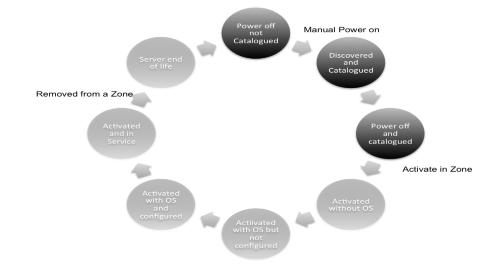

One of the most tedious and repetitive tasks in a Data Center is the provisioning and implementation of new servers. The different steps required to complete the process, from the moment a server arrives at a given facility to its final implementation, are the following:
- Reception and cataloging of server
- Server testing
- Decision on who will use the server
- Decision on where the server will be located
- Installation of operating system
- Configuration of applications that will run on the system
- Delivery to client
- The server Pool management and activation within zones implements this process automatically in Automation.
Basically the pool allows to provision new servers into the zones. But it can also perform other interesting feature:
Replacement of failing servers (Failover): Automation offers the possibility to automatically replace malfunctioning servers in an unattended way. The images residing in the different VMs, the network and the general configuration is replicated.
A device is a server or another type of device identified by their MAC and it is a candidate to take part in an OpenStack Zone. A device is view in the pool once it has been added to.
The server Pool is the tool included in StackOps Automation, that automates this whole process. This chart shows the different states (described below) a server can have in the tool:
The operations allow in the python-automatioclient are.
device-list List all the devices in the pool.
device-show Show details about a device.
device-update Update a device.
device-delete Remove a specific device from pool.
device-power-off Power off a specific device in the pool.
device-power-on Power on a specific device in the pool.
device-reboot Reboot a specific device in the pool.
device-replace Replaces a node in a zone by a specific device in the
pool.
device-shutdown Shutdown a specific device in the pool.
device-soft-reboot Soft reboot a specific device in the pool.
device-activate Activate a specific device in the pool.
$ device-list
+----+-------------------+-------------------+------------+
| id | name | mac | status |
+----+-------------------+-------------------+------------+
| 2 | 08:00:27:81:ea:46 | 08:00:27:81:ea:46 | INSTALLING |
| 3 | 08:00:27:68:1c:62 | 08:00:27:68:1c:62 | INSTALLING |
+----+-------------------+-------------------+------------+
To show details about a device this one must be reference by its MAC
$ device-show 08:00:27:81:ea:46
+----------------------------+----------------------------------------------------------------------------------------+
| Property | Value |
+----------------------------+----------------------------------------------------------------------------------------+
| certified | False |
| connection_data | {"username": "stackops", "key_name": "nonsecure", "host": "180.10.10.196", "port": 22} |
| cores | 1 |
| created | 2013-10-09 11:18:42 |
| disk_size | 8589934592 |
| id | 2 |
| ip | 180.10.10.196 |
| lom_ip | None |
| lom_mac | None |
| mac | 08:00:27:81:ea:46 |
| management_network_dns | None |
| management_network_gateway | None |
| management_network_ip | 180.10.10.196 |
| management_network_netmask | None |
| megaherzs | 0 |
| memory | 1043963904 |
| name | 08:00:27:81:ea:46 |
| ports | 1 |
| product | VirtualBox () |
| status | INSTALLING |
| threads | 1 |
| updated | None |
| vendor | innotek GmbH |
| zone_id | None |
+----------------------------+----------------------------------------------------------------------------------------+
To update a device all arguments are mandatory
$ help device-update
usage: automation device-update <mac> <lom-ip> <lom-mac>
<management-network-ip>
<management-network-netmask>
<management-network-gateway>
<management-network-dns>
Update a device.
Positional arguments:
<mac> MAC of the device.
<lom-ip> New lom_ip for the device.
<lom-mac> New lom_mac for the device
<management-network-ip>
New IP for management network of the device
<management-network-netmask>
New netmask for the management network of the device
<management-network-gateway>
New gateway for the management network of the device
<management-network-dns>
New DNS for the management network of the device
$ device-update 08:00:27:81:ea:46 None None 180.10.10.196 None None None
+----------------------------+----------------------------------------------------------------------------------------+
| Property | Value |
+----------------------------+----------------------------------------------------------------------------------------+
| certified | False |
| connection_data | {"username": "stackops", "key_name": "nonsecure", "host": "180.10.10.196", "port": 22} |
| cores | 1 |
| created | 2013-10-09 11:18:42 |
| disk_size | 8589934592 |
| id | 2 |
| ip | 180.10.10.196 |
| lom_ip | None |
| lom_mac | None |
| mac | 08:00:27:81:ea:46 |
| management_network_dns | None |
| management_network_gateway | None |
| management_network_ip | 180.10.10.196 |
| management_network_netmask | None |
| megaherzs | 0 |
| memory | 1043963904 |
| name | 08:00:27:81:ea:46 |
| ports | 1 |
| product | VirtualBox () |
| status | INSTALLING |
| threads | 1 |
| updated | 2013-10-22 15:35:51.347526 |
| vendor | innotek GmbH |
| zone_id | None |
+----------------------------+----------------------------------------------------------------------------------------+
To delete a device, this one must be reference by its MAC
$ device-delete 08:00:27:68:1c:62
$ device-list
+----+-------------------+-------------------+------------+
| id | name | mac | status |
+----+-------------------+-------------------+------------+
| 2 | 08:00:27:81:ea:46 | 08:00:27:81:ea:46 | INSTALLING |
+----+-------------------+-------------------+------------+
To power-off a device all arguments are mandatory
$ help device-power-off
usage: automation device-power-off <mac> <lom-user> <lom-password>
Power off a specific device in the pool.
Positional arguments:
<mac> Mac of the device to power off.
<lom-user> lom_user credential.
<lom-password> lom_password for lom_user credential
$ device-power-off 08:00:27:81:ea:46 stackops stackops
To power-on a device all arguments are mandatory
$ help device-power-on
usage: automation device-power-on <mac> <lom-user> <lom-password>
Power on a specific device in the pool.
Positional arguments:
<mac> Mac of the device to power on.
<lom-user> lom_user credential.
<lom-password> lom_password for lom_user credential
$ device-power-on 08:00:27:81:ea:46 stackops stackops
To reboot a device all arguments are mandatory
$ help device-reboot
usage: automation device-reboot <mac> <lom-user> <lom-password>
Reboot a specific device in the pool.
Positional arguments:
<mac> Mac of the device to reboot.
<lom-user> lom_user credential.
<lom-password> lom_password for lom_user credential
$ device-reboot 08:00:27:81:ea:46 stackops stackops
$ help device-shutdown
usage: automation device-shutdown <mac>
Shutdown a specific device in the pool.
Positional arguments:
<mac> Mac of the device to shutdown.
$ device-shutdown 08:00:27:81:ea:46
$ help device-soft-reboot
usage: automation device-soft-reboot <mac>
Soft reboot a specific device in the pool.
Positional arguments:
<mac> Mac of the device to soft reboot.
$ device-soft-reboot 08:00:27:81:ea:46
$ help device-activate
usage: automation device-activate [--lom-user <lom-user>]
[--lom-password <lom-password>]
<mac> <zone-id>
Activate a specific device in the pool.
Positional arguments:
<mac> Mac of the device to activate.
<zone-id> ID of the zone to activate the device
Optional arguments:
--lom-user <lom-user>
Out-of-band user
--lom-password <lom-password>
Out-of-Band user password
$ device-activate 08:00:27:81:ea:46 1
+----------------------------+----------------------------+
| Property | Value |
+----------------------------+----------------------------+
| certified | False |
| cores | 1 |
| created | 2013-10-09 11:18:42 |
| disk_size | 8589934592 |
| id | 2 |
| ip | 180.10.10.196 |
| lom_ip | None |
| lom_mac | None |
| mac | 08:00:27:81:ea:46 |
| management_network_dns | None |
| management_network_gateway | None |
| management_network_ip | 180.10.10.196 |
| management_network_netmask | None |
| megaherzs | 0 |
| memory | 1043963904 |
| name | 08:00:27:81:ea:46 |
| ports | 1 |
| product | VirtualBox () |
| status | ACTIVATED |
| threads | 1 |
| updated | 2013-10-23 09:17:38.504076 |
| vendor | innotek GmbH |
| zone_id | 1 |
+----------------------------+----------------------------+
To replace a device to another one in a zone you must to provide mac, zone-id, role-id and node-id as manatories
$ help device-replace
usage: automation device-replace
[--lom-user-node-to-remove <lom-user-node-to-remove>]
[--lom_password-node-to-remove <lom-password-node-to-remove>]
[--lom-user-node-to-add <lom-user-node-to-add>]
[--lom-password-node-to-add <lom-password-node-to-add>]
<mac> <zone-id> <role-id> <node-id>
Replaces a node in a zone by a specific device in the pool.
Positional arguments:
<mac> Mac of the device to activate.
<zone-id> ID of the zone of the node to replace
<role-id> The ID of the role to deploy in the new node
<node-id> The ID of the node to be replaced
Optional arguments:
--lom-user-node-to-remove <lom-user-node-to-remove>
Out-of-band user of the node to remove
--lom_password-node-to-remove <lom-password-node-to-remove>
Out-of-Band user password of the node to remove
--lom-user-node-to-add <lom-user-node-to-add>
Out-of-band user of the device to add
--lom-password-node-to-add <lom-password-node-to-add>
Out-of-Band user password of the device to add
$ device-replace 08:00:31:71:ae:45 1 1 1
+----------------------------+----------------------------+
| Property | Value |
+----------------------------+----------------------------+
| certified | False |
| cores | 1 |
| created | 2013-10-09 11:18:42 |
| disk_size | 8589934592 |
| id | 2 |
| ip | 180.10.10.197 |
| lom_ip | None |
| lom_mac | None |
| mac | 08:00:31:71:ae:45 |
| management_network_dns | None |
| management_network_gateway | None |
| management_network_ip | 180.10.10.197 |
| management_network_netmask | None |
| megaherzs | 0 |
| memory | 1043963904 |
| name | 08:00:31:71:ae:45 |
| ports | 1 |
| product | VirtualBox () |
| status | ACTIVATED |
| threads | 1 |
| updated | 2013-10-23 09:25:28.504076 |
| vendor | innotek GmbH |
| zone_id | 1 |
+----------------------------+----------------------------+